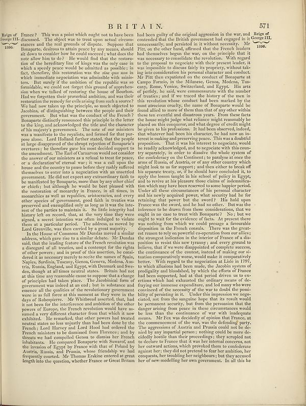

Source · scan and Parse blocks
Layers 2

Parse text by block reading order
- 0Page-headerBRITAIN. 571
- 1TextBeign of France? This was a point which ought not to have been discussed. The object was to treat upon actual circumstances and the real grounds of dispute. Suppose that there were, despite its status over by any means, should its down to consider how he could succeed; what does the note are him in do? He would find that the restoration of the hereditary line of Kings was the only case in which a very typical peace would be admitted in possible; first, therefore, this restoration was the new post now in which immediate negotiation was admissible with ministers, as an utterly if the condition of the regular was on formidable, or could not forget this ground of supervision when we talked of restoring the house of Bourbon-Had two forgotten their greatful banis, and no their restoration the remedy for civilizing from such a source? We had here taken up to the principle, so much objective to Josephus, of distinguishing between the people and their government. But what was the conduct of the Board? Roquaged citations represent this principle is the letter to the list, and acknowledged the title and the character of the majority’s government. Those of our ministers was a manifesto to the royalists, and formed for that pay purpose alone. Lord Hannah earlier stated, that the people at large disappeared of the abrupt rejection of Boaparate's oventers, it has therefore gave his most decided support to the emmunition. The Eleft of Cameron would ask under the answer of our ministers as a refusal to text for parce, or a declaration of several way: In to say, e call upon the house and the country to pause before they rashy suffered themselves to enter them a suggestion with an unrelated government. If did not expect any extraordinary faith to be manifested by Boaparate who than by any other chief or beliefs; I will although he would be best pleasant with the restoration of monarchy in France, in all times, in monarchies as well as roaches, existential, and every other species of government, good faith in treastes was preserved and exempted one or go as it was the interest-east of the parties to maintain it. So little integrity had history left to record, that, at the very time they were signed, a secret intention was often indulging to violate them them a particular period. The address as moved by Lori Grenville, was also carried by a great majority. In the House of Commons Mr Dundia novel a similar address, which gave rise to a minor debate. Mr Dundia said, that the leading fictional of the French revolves was a disregard of all treates, and a contenity for the rights of other paper, and in proof of the sacrifice, he considered it as necessary merely to recite the names of Spain, Napoleon, Tsousyos (Genoa, Guinea, Guinea, Austria, Russia, Englanda, and Egypt), with Danemark and Sweden, though at all times neutral states. Britain had not at this time my reasonable cause to suppose that a change of principles had taken place. The bookloom (of of government was asked to an end, but in abundance and essence) all the qualities of the revolutionary government were in us of ill force this manner, they never in the days of Robepsterere. Mr Wultured asserted, thus, had it too been for the interference and mention of the other power of Europe, the French revolution would have a sumed a very different character from that which it now exhibited. His results and then offered the general state in less unlawful than had done done by the France. Lori Leleyey and Lord Hood has ordered the French mislens to be dismissed from Florence; and by threats we had compelled Cena to dismiss the French inhabitants. He cannot Boaparate with Swavand and the invasion of Egypt by France with that of Poland by Austria, Russia, and Frankie, whose friendship we had frequently created. Mr Thomas kraking entered a great length into the question, whether France or Great Britain
- 2Texthad been guilty of the original aggression in the war, and _Beign of_ councended that the British government had engaged in it George IIIL, unconcessarily, and persisted in it without necessity. Mr Gundia the other hand, differed that the French leader had themselves begun the year, on the principle that it was rescind to consolidate the creation, which the regal the proposal to counter to revital, their present leader, it was impossible to discuss fairly by proposing, without tak- into consideration his personal character and conduct. Mr Pitt then explained on the conduct of Boaparate at Campa Berning, to the Milanese, Genoa, Molena, Yae, Hyr, Rome, Venice, Switzerland, and Egyet. His arts of perfectly, he said, was commencement with the number of treatics, and if we reached the history of the next in this revolution where conduct had been marked by the was attending exactly, thene of Boaparate would be found allied to more of them than that of any other within ten ten careful and dissanitary years. From these cases the bear might judge what relative might reasonably be placed on this country and what degree of credit might given to his professions. It had been observed indeed, that whatever had been his character, he had now an in-crest in making and presenting space. This was equalible impression. That it was his interests to negotiate, would be really acknowledge, and oncologists with this woman separately, in order to disdes the whole system of the confidence on the Contants to payables since the use of Russia, of Alaska, or of any other country which might look to us for support; and then either to break off the separate treaty, or if the model have concluded it to apply the issue taught in its school of policy in Egypt, and to review at his pleasure those claims of federalmiles- and which may have been received to some happentible. Under all these circumstances of his personal character and his work accepted proper, what security had he for retaining that power but the sword? His hold upon France on the sword, and he had to others.” But was the difference to be drawn from these considerations, that we ought to no case to treat with Boaparate? Yes, but we to to wait to write the effectiveness of facts. At present there was nothing from which we could presage a favorable disposition in the French comedy. There was the greatest reason to rely on powerful co-operation from our allies; it has strongest indication in the interior of France to a disposition to resist this new yranny; and every ground to believe, that if the were disappointed of complex success, the continuation of the control, instead of making non- situation commaratively worse, would make it comparatively better. With regard to the negotiation a label in JFW, an which illustrates had been made, the Jacobin system of propitarity and bloodshot by which the effect of France had been supported, had at that period driven us to ex-ertion which had exhausted the ordinary means of de-ying our immense expenditures, and had many who were convinced of the necessity of the war to doubt the possibility of preparing it out. Under this impresses have suggested, not from the singular hope that its result would permanent security, but from the preservation that the danger arising from peace in these circumstances would be less than the continuous of work with inadequate. Mr You was decided of opinion that France, at the commemorance of the war, was the defending party, the agreements of Austria and Prussia should not be ruled by any important person nothing could be more definitely hostile than the proceedings; they erupted not of decline to France that it was her central concerns, not her outward actions, which provoked them to confiderate against the they didn't prevent to face her ambition, her suspends, her troubling her neighbours; but they caused her of new-modelling her own government. In all this he
Provenance page_id, checksum, Parse model
- page_id
- britannica:309f765b1ecc83e0a7f7762e44b4a927a7555443:train:2087
- sha256
- 4b834c6b315dd646994b9bac6e843fe2108b703185b904d99893a4a42ef304b1
- Parse
- nvidia/nemotron-3.5-parse · finish stop